Old site in.New site out.
Every redesign runs the same line: the old site is taken apart, every real fact is kept, and the new one is assembled from its parts by a set of agents with a line of checks between every step. This is the movement, part by part, under the glass.
You describe the clients you want in your own words; Clikiti turns them into one long, exact Boolean search, and a radar over the United States finds every tourism business with a website and pings twelve. Their sites are scanned and flagged; one, an old travel website, rides in on a production line and is taken apart. Five agents jump in and the line splits into five: one maps the pages, one locks every fact, one rewrites the words, one decides page roles and asks a question, one designs, passing work between them. The new Local Friend Tour site is built from wireframes, goes live, and opens out into a map of its pages. Then the report, before and after, email and share link become one pitch kit, it lands on WhatsApp, email and LinkedIn, and the reply turns into a booked call.
Eight functions.Each one, an object.
- ScanUsability, accessibility and speed, read in a minute.
- MapEvery page and link, and the orphans.
- RedesignThe new page, lifted off the old one.
- PitchOne link, sent from your own inbox.
- BuildHome first, then every floor.
- PublishChecked, then switched on.
- CrewFour agents and one who asks.
- Template checkStamps out the machine-made look.
Five lenses on one page.
The scan fetches the live page and reads the document, weighs every asset, measures colour contrast, and runs the heuristic, speed and accessibility checks. Each pass ticks off only when the engine reports real work, never on a timer. Free, with no account, in about a minute.
- Usability: Nielsen’s heuristics, checked the way a UX lead would.
- Accessibility: the WCAG 2.2 AA checks a machine can test.
- Speed: weight, requests, heavy assets, compression, server response.
- Every finding carries its evidence: the element, the page, the number.
- ContentTheir homepage, as a visitor sees it
- Usability61. Three heuristics fail
- Information architecture9 pages, 1 orphan, no path to Pricing
- Accessibility49. Text contrast 2.1:1 on the hero
- Speed64. Largest paint 4.8 s on mobile
One polite bot sees one polite path.So a scan sends four temperaments.
- Whiskers, curious oneUX heuristics, content, navigation
- Shadow, sneaky oneAccessibility, edge cases, security
- Tiger, aggressive oneSpeed, page weight, load
- Paws, clumsy oneQA, forms, duplicate actions
Try it on a real website.Free, no account, about a minute.
Paste any public homepage: your own, a client’s, or the prospect you are about to pitch.
- Fetch the live pageWhiskers, waiting
- Read the documentWhiskers, waiting
- Weigh every assetTiger, waiting
- Check colour contrast (WCAG AA)Shadow, waiting
- Run heuristics, speed & a11y checksPaws, waiting
- Walk the user flowsWhiskers, waiting
- Score itTiger, waiting
Paste any homepage. Your report lands here in about a minute.
The old site, read whole.
Whiskers walks every page and link and keeps what each page says. The map needs no model at all: it is read from the site itself.
- Every page’s words are kept, so the rewrite starts from them.
- Orphans, dead ends and duplicate pages are flagged.
- The map becomes the plan the new site hangs on.
- HomeThe front door, 14 links out
- SectionsMenu, About, Order, Contact
- Pages9 pages read, every word kept
- Links14 internal links followed
- Orphans1 page nothing links to
Nothing real gets lost.
Before a page is designed, the facts are read from the old site: name, logo, phones, emails, address, hours, services, prices, testimonials. Every draft is checked against that list.
- A draft that lost a fact gets one targeted revise, then a re-check.
- Anything still missing is put back by code, so it is never shipped lost.
- The brand colours and logo are locked; the palette is built around them.
- Clikiti Pages: 2 to 4 minutes.
- The new pageTheir home page, redesigned
- StructureHero, products, visit, footer
- Kept facts38 facts kept, 0 invented
- BrandTheir colours and logo, locked
- The old pageTheir site today
A design board of six.What they learn goes into every page.
Pages are reviewed by six seats, each judging one thing. What the board learns becomes a rule that every new design is given.
- Creative directorFirst impression, originality, finish
- UX leadHierarchy, the path, the phone layout
- Conversion strategistThe offer clear in five seconds
- SEO specialistOne clear H1, structure, local signals
- Copy and narrative leadOne story, specific to the business
- Accessibility and performance leadContrast, tap targets, weight
A rule, not a hope.
A deterministic check reads every generated page for the patterns that make a site look machine-made. Blocking patterns get one fix round; the fix is kept only if it removes them without losing a fact.
- Copy: hype words, false contrasts, invented proof, placeholder names.
- Design: decorative purple gradients, frosted glass, emoji icons, template skeletons.
- The client’s own colours and fonts are always exempt.
- The pageWhat ships
- Copy checkNo hype words, no invented proof
- Layout checkNo template skeletons
- Colour checkNo decorative purple gradients
- Their brandAlways exempt
Five jobs, one movement.
The same cats take on jobs. Each checks the work of the one before, and when one is not sure, it asks you one question instead of guessing.
- Whiskers maps. Shadow checks each page right behind the build.
- Tiger designs page by page; Paws rewrites without adding facts.
- Sphinx decides page roles, and asks you when it is less than 60% sure.
- Sphinx, decidesAsks you when it is less than 60% sure
- Whiskers, mapsEvery page and link on the old site
- Shadow, checksEvery page, before it ships
- Tiger, designsOne page at a time
- Paws, writesRewrites, never invents
One link. The whole pitch.
The report, the redesign and the email go out as one link with your branding. You send it from your own inbox; Clikiti never contacts your prospects.
- The audit, in words your prospect understands.
- Their site next to yours, side by side.
- An email draft you edit and send yourself.
- Your brandYour branding on the kit
- EmailReady to send from your own inbox
- Share linkOne link with all of it
- Before and afterTheir site next to yours
- Report58 of 100, every finding
Home first. Then every floor.
When the prospect says yes, the redesign becomes their whole site. The home page is designed first and approved by you; every other page takes on its look, one at a time.
- No properties panels: click anything and a small editor that fits it opens beside it.
- Every agent ask shows its cost before it runs.
- Build fees by size: $79 up to 5 pages, $129 up to 10, $199 up to 20, $449 up to 50.
- Home pageDesigned first, approved by you
- Every other pageTakes the approved look, one at a time
- WordsFrom the old site, never invented
- Section libraryBuilt from tested sections
- Site mapThe plan every page hangs on
A gate before going live.
Shadow’s checks run on every page. Blockers stop a publish until they are fixed; warnings are shown with a one-click fix.
- Lost facts, unread words and broken links are blockers.
- Every change is saved as a version you can return to.
- Custom domains with SSL; hosting is $19 a month per site.
- VersionsEvery change saved; undo anything
- ChecksLost facts, unread words and broken links block a publish
- Hosting$19 a month per site
- SSLOn for every domain
- DomainTheirs, or a new one
The Atelier gallery.One of one, made by hand.
Pages built around one idea from each business, by the Clikiti team. Open any of them and scroll.
 One day at the hotel: the scroll is the clock.
One day at the hotel: the scroll is the clock. A roll of film that develops as you scroll.
A roll of film that develops as you scroll. The route from the slope to your cup.
The route from the slope to your cup. The site is a set of drawings.
The site is a set of drawings. Scrolling shifts up through the gears.
Scrolling shifts up through the gears. A launch through a portal into four worlds.
A launch through a portal into four worlds. Money in motion, one life moment at a time.
Money in motion, one life moment at a time. A calm tide: one slow day at sea.
A calm tide: one slow day at sea. A network that grows as you learn.
A network that grows as you learn. The word is a muscle under load.
The word is a muscle under load. A conversation with a local friend; the bird flies with you.
A conversation with a local friend; the bird flies with you. A letterpress invitation suite.
A letterpress invitation suite. A child's explorer passport.
A child's explorer passport. The bird's colours split into a spectrum.
The bird's colours split into a spectrum.The templates gallery.Clikiti Pages, in every plan.
The fast redesign every plan includes: the prospect’s own facts and brand, set in a tested layout, in minutes.
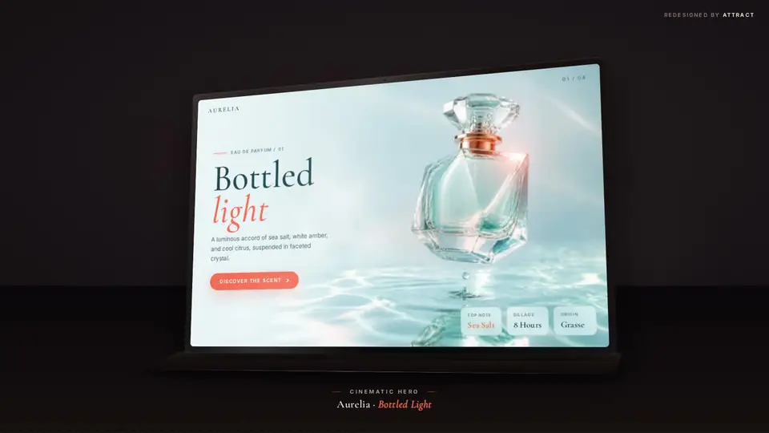
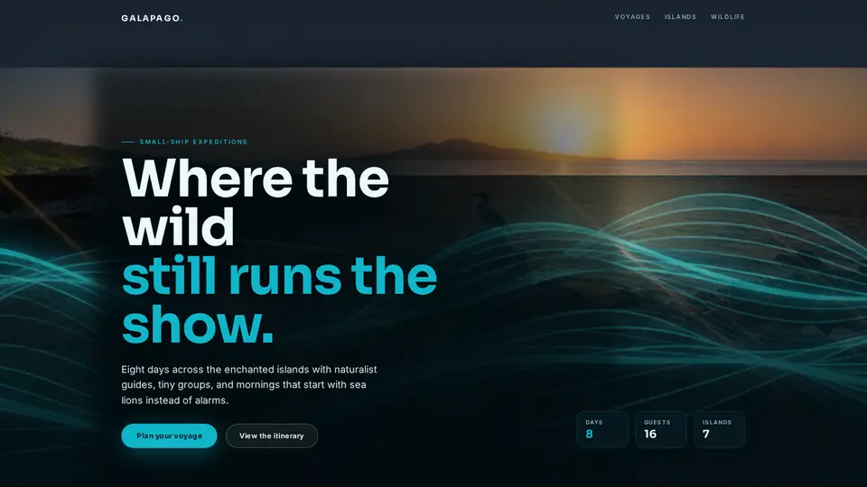
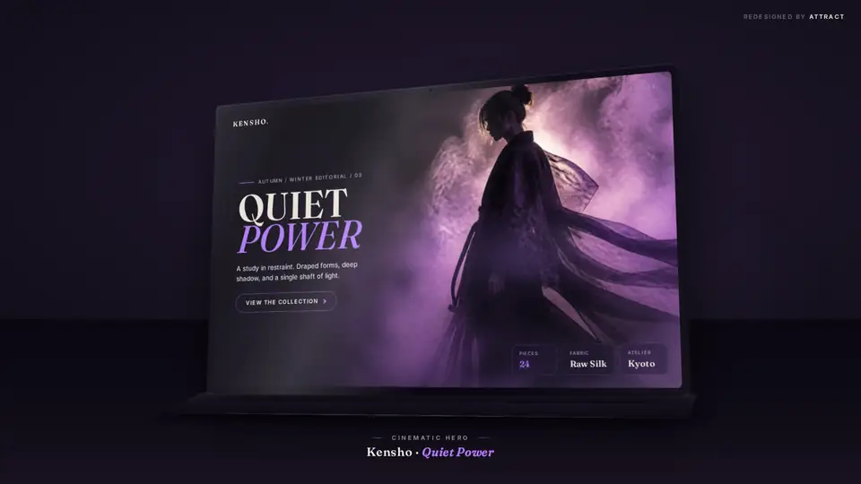
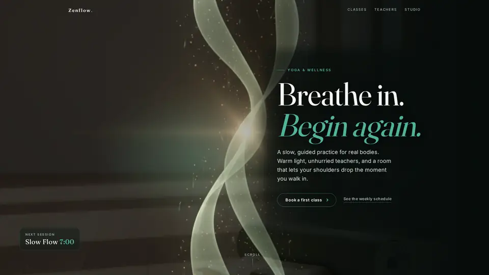
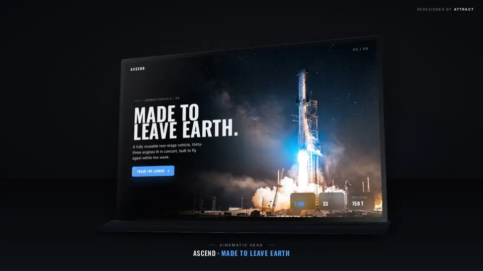
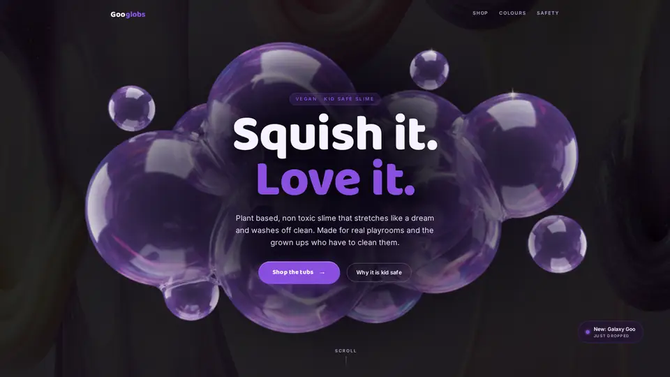
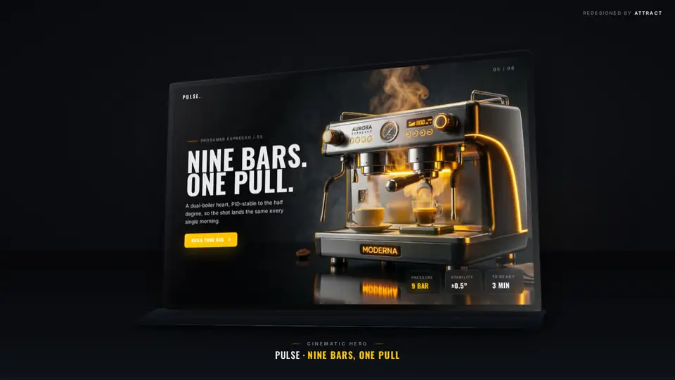
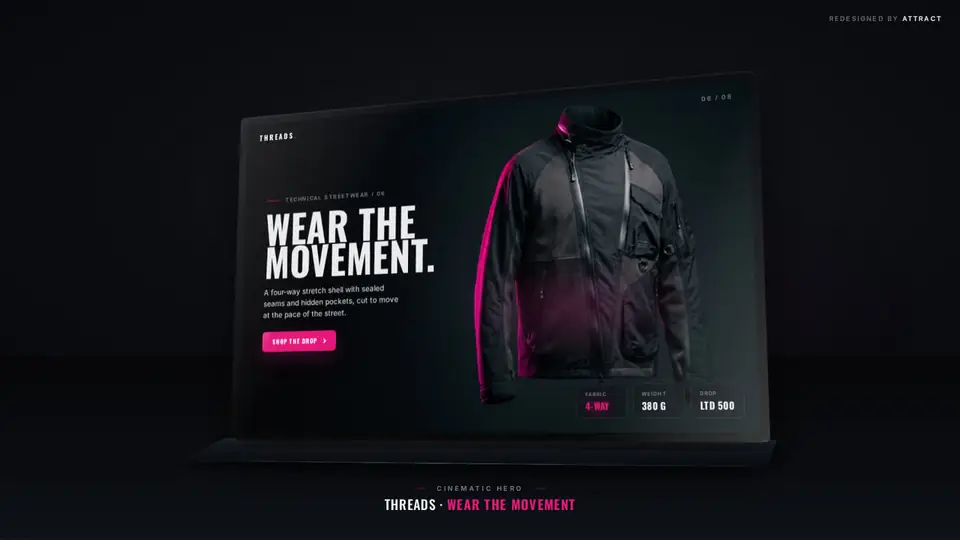
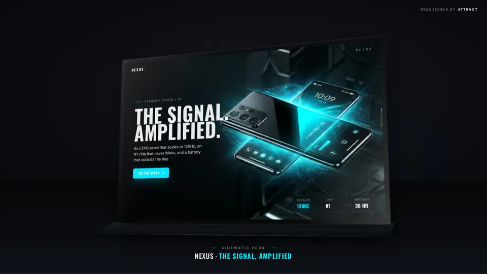
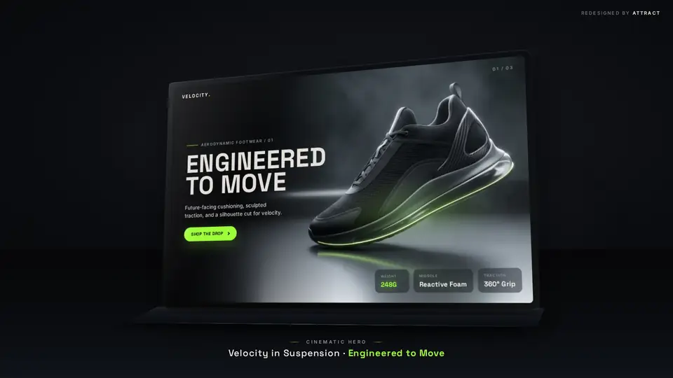
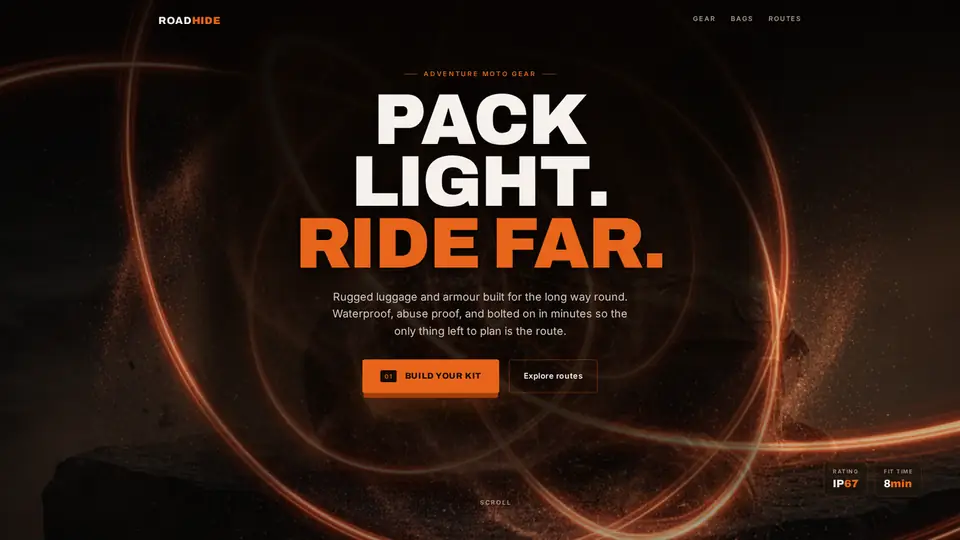
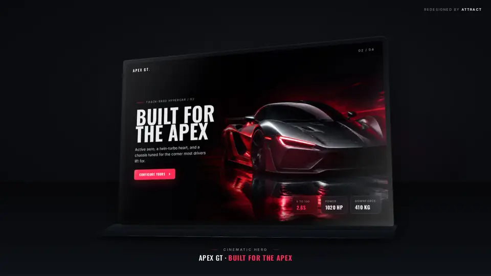
Designing in Figma?Start free with the plugin.
The font replacer and the restyle also run inside Figma, as a plugin: every weight matched, text styles updated, and a page turned into new looks or its own dark mode, on the layers you already have.

See every screen in Explore the app. The research behind the scan is public: Clikiti Research. Working in Figma? See the Figma plugin.
Ask for access.
We review every request by hand during the alpha.